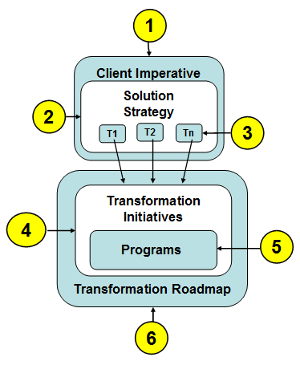

-
Client Imperative: The client imperative is a formal statement of what the client is trying
to achieve. It should be aligned with the opportunity description in the Opportunity Plan (ART
0612). The statement of the client imperative is defined in the Client Imperative (ART
0696) which also contains sections on motivation and solution strategy
-
Solution Strategy: Solution strategy defines a high level course of action that will satisfy the
client imperative. Solution strategy also contains multiple aspects which define tactics which will implement the
strategy.
-
Tactics (T1..Tn): Tactics are specific statements that provide detail regarding the high level
course of action expressed in the strategy. Tactics define how the strategy will be implemented. A tactic or a
set of related tactics deliver objectives and are are achieved by initiatives.
-
Transformation initiative: A transformation initiative describes how the client will
realize a particular tactic or set of tactics in terms of programs, projects and associated
change. In a pre-sale context, it is likely that a single transformation initiative will be
sufficient and may address more than one tactic. The granularity of an initiative and even appropriate use of
the term will vary by client. A transformation initiative is comparable to an initiative as described in
Transition Initiatives (ORG 305).
-
Program: Programs accomplish changes which are required to implement a particular tactic
or set of tactics and achieve a desired end.. Changes could include solutions, assessments and various projects
that transform the as-is state of the IT environment to some to-be state. Related required changes are
organized into programs which define the transformation initiative. Programs are implemented via
projects.
-
Transformation Roadmap: The Transformation Roadmap provides an overview of the transformation
initiative and associated programs that includes basic information regarding initiative overview, context,
scope, business benefits and timeline.The Transformation Roadmap is documented using the
Strategic Roadmap (BUS 326) artifact.

Note to System Architect (SA4TeamSD) users: System Architect (SA4TeamSD) may be helpful in
illustrating relationships among solution strategy, tactics and other elements based on the Business Motivation Model
described in Business Direction (BUS 411).
|